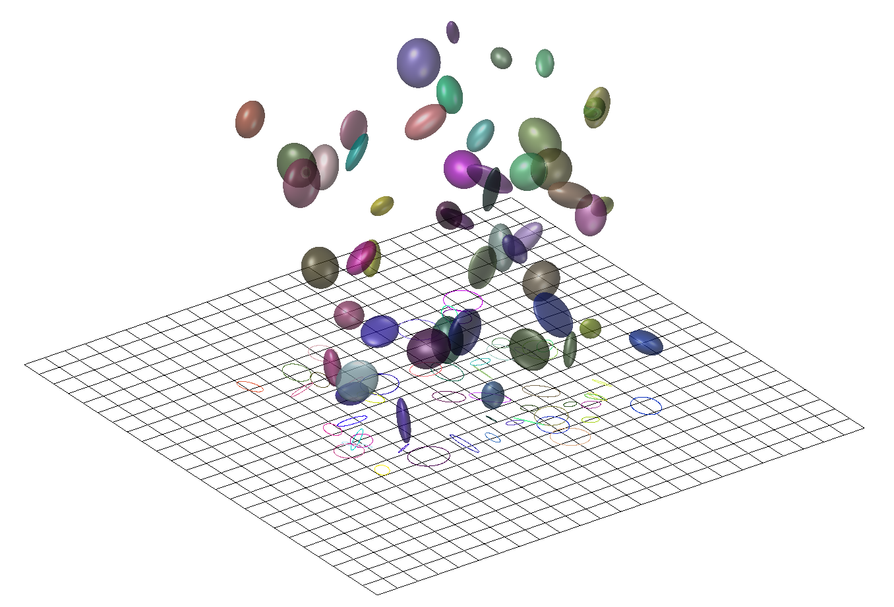

详解3D Gaussian Splatting CUDA Kernel：反向传播（一）BACKWARD::render
3D高斯前向传播和反向传播的CUDA代码调用栈很类似，都是RasterizeGaussiansBackwardCUDA(RasterizeGaussiansCUDA)->backward(forward)->render/preprocess，其中的各种初始化过程也都大差不差，看懂了上一篇前向传播的代码解析的调用栈这反向传播的调用栈也自然就懂，不做赘述，我们直接从render和preprocess开始看：
回忆上一篇中的前向传播过程（CudaRasterizer::Rasterizer::forward函数）。
预处理函数FORWARD::preprocess计算每一个高斯球投影出来的圆半径及覆盖的范围，其输入高斯球参数和相机位姿，计算每个高斯球的3D协方差geomState.cov3D、在该相机视角下的2D协方差逆矩阵geomState.conic_opacity[0:3](geomState.conic_opacity共四项最后一项是透明度参数)、高斯球中心在成像平面上的位置geomState.means2D、距成像平面的深度geomState.depths、并用球谐系数算出高斯球在该相机视角下的颜色geomState.rgb等。
之后就是对高斯球按tile和深度排序等操作，然后进入FORWARD::render函数，以预处理计算好的geomState.conic_opacity、geomState.means2D、geomState.rgb等为输入，按照深度顺序对高斯球进行alpha blending得到最终的渲染图。
BACKWARD::preprocess和BACKWARD::render分别对应这两个过程的反向传播。
它们在CudaRasterizer::Rasterizer::backward里的调用过程也是反着的，先调用BACKWARD::render计算高斯球在成像平面上的2D协方差矩阵和颜色等项的梯度，再调用preprocess计算各高斯球参数的梯度。

# 对渲染过程的反向传播BACKWARD::render
BACKWARD::render对grid个tile各启动block(16x16x1)个线程，即每个像素一个线程运行renderCUDA：
void BACKWARD::render(
const dim3 grid, const dim3 block,
const uint2* ranges,
const uint32_t* point_list,
int W, int H,
const float* bg_color,
const float2* means2D, // 高斯球投影在像平面上的2D均值位置
const float4* conic_opacity, // 高斯球投影在像平面上的2D协方差矩阵（叠加透明度）
const float* colors, // 高斯球在该相机视角下的颜色
const float* final_Ts,
const uint32_t* n_contrib,
const float* dL_dpixels, // 从Pytorch中传过来的渲染图上每个像素的梯度
float3* dL_dmean2D, // 高斯球投影在像平面上的2D均值位置的梯度（待求解）
float4* dL_dconic2D, // 高斯球投影在像平面上的2D协方差矩阵（不叠加透明度）的梯度（待求解）
float* dL_dopacity, // 高斯球透明度的梯度（待求解）
float* dL_dcolors) // 高斯球颜色的梯度（待求解）
{
renderCUDA<NUM_CHANNELS> << <grid, block >> >(
ranges,
point_list,
W, H,
bg_color,
means2D,
conic_opacity,
colors,
final_Ts,
n_contrib,
dL_dpixels,
dL_dmean2D,
dL_dconic2D,
dL_dopacity,
dL_dcolors
);
}
2
3
4
5
6
7
8
9
10
11
12
13
14
15
16
17
18
19
20
21
22
23
24
25
26
27
28
29
30
31
32
33
34
# 进一步深入renderCUDA
每个像素一个renderCUDA线程：
// Backward version of the rendering procedure.
template <uint32_t C>
__global__ void __launch_bounds__(BLOCK_X * BLOCK_Y)
renderCUDA(
const uint2* __restrict__ ranges,
const uint32_t* __restrict__ point_list,
int W, int H,
const float* __restrict__ bg_color,
const float2* __restrict__ points_xy_image,
const float4* __restrict__ conic_opacity,
const float* __restrict__ colors,
const float* __restrict__ final_Ts,
const uint32_t* __restrict__ n_contrib,
const float* __restrict__ dL_dpixels,
float3* __restrict__ dL_dmean2D,
float4* __restrict__ dL_dconic2D,
float* __restrict__ dL_dopacity,
float* __restrict__ dL_dcolors)
{
2
3
4
5
6
7
8
9
10
11
12
13
14
15
16
17
18
19
# 获取当前tile对应的像素range
首先是和前向传播的renderCUDA中一毛一样的各种变量初始化：
// We rasterize again. Compute necessary block info.
auto block = cg::this_thread_block();
const uint32_t horizontal_blocks = (W + BLOCK_X - 1) / BLOCK_X;
const uint2 pix_min = { block.group_index().x * BLOCK_X, block.group_index().y * BLOCK_Y };
const uint2 pix_max = { min(pix_min.x + BLOCK_X, W), min(pix_min.y + BLOCK_Y , H) };
const uint2 pix = { pix_min.x + block.thread_index().x, pix_min.y + block.thread_index().y };
const uint32_t pix_id = W * pix.y + pix.x;
const float2 pixf = { (float)pix.x, (float)pix.y };
const bool inside = pix.x < W&& pix.y < H;
2
3
4
5
6
7
8
9
10
# 获取当前tile对应的像素range
然后是和前向传播的renderCUDA中一毛一样获取当前tile对应的像素range：
const uint2 range = ranges[block.group_index().y * horizontal_blocks + block.group_index().x];
const int rounds = ((range.y - range.x + BLOCK_SIZE - 1) / BLOCK_SIZE);
bool done = !inside;
int toDo = range.y - range.x;
2
3
4
5
6
# 渲染前的初始化
和前向传播的renderCUDA中一毛一样初始化block内部用的__shared__数组和thread里用的一下变量：
__shared__ int collected_id[BLOCK_SIZE];
__shared__ float2 collected_xy[BLOCK_SIZE];
__shared__ float4 collected_conic_opacity[BLOCK_SIZE];
2
3
比前向传播的renderCUDA中多一个collected_colors存储前向传播渲出的颜色：
__shared__ float collected_colors[C * BLOCK_SIZE];
取出前向传播的renderCUDA中的一些计数结果
// In the forward, we stored the final value for T, the
// product of all (1 - alpha) factors.
const float T_final = inside ? final_Ts[pix_id] : 0; // 该像素在alpha blending时积累的透明度
float T = T_final;
// We start from the back. The ID of the last contributing
// Gaussian is known from each pixel from the forward.
uint32_t contributor = toDo; // 参与该像素alpha blending的高斯球数量
const int last_contributor = inside ? n_contrib[pix_id] : 0; // 参与该像素alpha blending的最后一个高斯球
2
3
4
5
6
7
8
9
初始化不透明度积累值（详见下文对不透明度的梯度计算）：
float accum_rec[C] = { 0 };
Loss值L对当前像素颜色C的梯度∂C∂L：
float dL_dpixel[C];
if (inside)
for (int i = 0; i < C; i++) // 三个通道上各有梯度
dL_dpixel[i] = dL_dpixels[i * H * W + pix_id];
2
3
4
用于计算透明度梯度的辅助变量：
float last_alpha = 0;
float last_color[C] = { 0 };
2
位置梯度中的最后一项：
// Gradient of pixel coordinate w.r.t. normalized
// screen-space viewport corrdinates (-1 to 1)
const float ddelx_dx = 0.5 * W;
const float ddely_dy = 0.5 * H;
2
3
4
其对应的公式是（具体用处详见下文中对高斯球中心点位置的梯度解析）：
∂xi∂Δx∂yi∂Δy=∂xi∂(xi−xpixel)=∂yi∂(yi−ypixel)=1=1
# for循环处理该像素的每个高斯球
这个for循环分两个部分，首先和前向传播的renderCUDA中一毛一样用BLOCK_SIZE个thread并行读取一批BLOCK_SIZE个高斯球进collected_*数组里，然后每个thread各自处理读进来的BLOCK_SIZE个高斯球：
// Traverse all Gaussians
for (int i = 0; i < rounds; i++, toDo -= BLOCK_SIZE)
{
// Load auxiliary data into shared memory, start in the BACK
// and load them in revers order.
block.sync();
const int progress = i * BLOCK_SIZE + block.thread_rank();
if (range.x + progress < range.y)
{
const int coll_id = point_list[range.y - progress - 1]; // !!!!!!!!注意!此处遍历高斯球的方向是由远及近!和前向传播相反!!!!!!!!
collected_id[block.thread_rank()] = coll_id;
collected_xy[block.thread_rank()] = points_xy_image[coll_id];
collected_conic_opacity[block.thread_rank()] = conic_opacity[coll_id];
for (int i = 0; i < C; i++)
collected_colors[i * BLOCK_SIZE + block.thread_rank()] = colors[coll_id * C + i];
}
block.sync(); //同步，确保读取全部完成
// Iterate over Gaussians
for (int j = 0; !done && j < min(BLOCK_SIZE, toDo); j++) //block(tile)里的每个thread(像素)都要对这个tile中的所有高斯球进行反向传播
{
// Keep track of current Gaussian ID. Skip, if this one
// is behind the last contributor for this pixel.
contributor--;
if (contributor >= last_contributor) // 由于遍历高斯球的方向是由远及近和前向传播相反，所以直到扫过最后一个高斯球才开始正式操作
continue;
// Compute blending values, as before.
const float2 xy = collected_xy[j];
const float2 d = { xy.x - pixf.x, xy.y - pixf.y };
const float4 con_o = collected_conic_opacity[j];
const float power = -0.5f * (con_o.x * d.x * d.x + con_o.z * d.y * d.y) - con_o.y * d.x * d.y;
if (power > 0.0f)
continue;
const float G = exp(power);
const float alpha = min(0.99f, con_o.w * G);
if (alpha < 1.0f / 255.0f)
continue;
T = T / (1.f - alpha);
// **************** 以上过程均和前向传播中一毛一样，从以下开始反向传播的核心代码 ****************
2
3
4
5
6
7
8
9
10
11
12
13
14
15
16
17
18
19
20
21
22
23
24
25
26
27
28
29
30
31
32
33
34
35
36
37
38
39
40
41
42
# 对高斯球颜色Ci的梯度
当前像素Loss值L对按深度排序的第i个高斯球的颜色Ci的梯度表示为：
∂Ci∂L=∂C∂L⋅∂Ci∂C
复习前向传播的renderCUDA的alpha-blending计算当前像素颜色C的公式为：
C=TN+1⋅Cbg+i=1∑NTi⋅αi⋅Ci
其中TN+1是alpha-blending运行到最后剩余的透明度，用于把背景颜色Cbgblending进来；αi和Ti分别对应第i个高斯球在当前像素的透明度和按顺序blending到第i个高斯球时剩余的透明度。
对Ci求导就是：
∂Ci∂C=Ti⋅αi
因此，带入上面的梯度就是：
∂Ci∂L=∂C∂L⋅Ti⋅αi
在代码中，这对应于：
const float dchannel_dcolor = alpha * T;
以及下一节的代码的for循环中对每个色彩通道进行操作的const float dL_dchannel = dL_dpixel[ch];和atomicAdd(&(dL_dcolors[global_id * C + ch]), dchannel_dcolor * dL_dchannel);
# 对高斯球不透明度αi的梯度
当前像素Loss值L对第i个高斯球的不透明度αi的梯度表示为：
∂αi∂L=∂C∂L⋅∂αi∂C
颜色C对第i个高斯球的不透明度αi的偏导：
∂αi∂C=∂αi∂(TN+1⋅Cbg+j=1∑NTj⋅αj⋅Cj)=∂αi∂TN+1⋅Cbg+j=1∑N∂αi∂(Tj⋅αj)⋅Cj
此处重点分析第二项：
j=1∑N∂αi∂(Tj⋅αj)⋅Cj
根据前向传播的renderCUDA中体现出的alpha-blending的计算过程可以列出Tj的公式：
Tj=k=1∏j−1(1−αk)
于是，当j<i时，Tj、αj、Cj均与αi无关，梯度为0；
当j=i时，Tj中无αi，但αj=αi，于是：
∂αi∂(Tj⋅αj)⋅Cj=∂αi∂(Ti⋅αi)⋅Ci=Ti⋅Ci
当j>i时，Tj中有1−αi，于是：
∂αi∂(Tj⋅αj)⋅Cj=αj⋅Cj⋅∂αi∂Tj=αj⋅Cj⋅∂αi∂∏k=1j−1(1−αk)=αj⋅Cj⋅Ti⋅∂αi∂∏k=ij−1(1−αk)=αj⋅Cj⋅Ti⋅∂αi∂(1−αi)∏k=i+1j−1(1−αk)=−αj⋅Cj⋅Ti⋅k=i+1∏j−1(1−αk)
注意这里的连乘运算规则：
j=i+1时∏k=i+1j−1(1−αk)=∏k=i+1i(1−αk)=1
j=i+2时∏k=i+1j−1(1−αk)=∏k=i+1i+1(1−αk)=1−αi+1
从而等式右边第二项可以化为：
j=1∑N∂αi∂(Tj⋅αj)⋅Cj=Ti⋅Ci−Ti⋅j=i+1∑Nαj⋅Cj⋅k=i+1∏j−1(1−αk)
令Ciaccum=∑j=i+1Nαj⋅Cj⋅∏k=i+1j−1(1−αk)，则可简化：
j=1∑N∂αi∂(Tj⋅αj)⋅Cj=Ti⋅(Ci−Ciaccum)
仔细观察Ciaccum：
Ci+1accumCiaccum=j=i+2∑Nαj⋅Cj⋅k=i+2∏j−1(1−αk)=j=i+1∑Nαj⋅Cj⋅k=i+1∏j−1(1−αk)=αi+1⋅Ci+1⋅k=i+1∏i(1−αk)+j=i+2∑Nαj⋅Cj⋅k=i+1∏j−1(1−αk)=αi+1⋅Ci+1+(1−αi+1)j=i+2∑Nαj⋅Cj⋅k=i+2∏j−1(1−αk)=αi+1⋅Ci+1+(1−αi+1)Ci+1accum
可以看出它其实就是在高斯球i之后的alpha-blending积累的颜色。所以在代码中对应了一段以渲染中相反的顺序（由远及近）对高斯球颜色进行alpha-blending的过程accum_rec[ch] = last_alpha * last_color[ch] + (1.f - last_alpha) * accum_rec[ch]。
于是最后，对不透明度的梯度公式中的第二项表示为：
∂αi∂L=∂C∂L⋅∂αi∂C=□+∂C∂L⋅Ti⋅(Ci−Ciaccum)
在代码中，这对应于 dL_dalpha += (c - accum_rec[ch]) * dL_dchannel和dL_dalpha *= T。
// Propagate gradients to per-Gaussian colors and keep
// gradients w.r.t. alpha (blending factor for a Gaussian/pixel
// pair).
float dL_dalpha = 0.0f;
const int global_id = collected_id[j];
for (int ch = 0; ch < C; ch++) // 对RGB三个通道操作
{
const float c = collected_colors[ch * BLOCK_SIZE + j];
// Update last color (to be used in the next iteration)
accum_rec[ch] = last_alpha * last_color[ch] + (1.f - last_alpha) * accum_rec[ch];
last_color[ch] = c;
const float dL_dchannel = dL_dpixel[ch];
dL_dalpha += (c - accum_rec[ch]) * dL_dchannel;
// Update the gradients w.r.t. color of the Gaussian.
// Atomic, since this pixel is just one of potentially
// many that were affected by this Gaussian.
atomicAdd(&(dL_dcolors[global_id * C + ch]), dchannel_dcolor * dL_dchannel); // 对颜色的梯度，详见上一节
}
dL_dalpha *= T;
// Update last alpha (to be used in the next iteration)
last_alpha = alpha;
2
3
4
5
6
7
8
9
10
11
12
13
14
15
16
17
18
19
20
21
22
再分析对不透明度的梯度公式中的第一项：
∂αi∂TN+1⋅Cbg
这是像素颜色中背景颜色的部分，其中的TN+1依赖于所有高斯球的 αi：
TN+1=k=1∏N(1−αk)
将TN+1对 αi 求导为：
∂αi∂TN+1=∂αi∂k=1∏N(1−αk)=∂αi∂(1−αi)(k=1∏i−1(1−αk))⋅(k=1∏i+1(1−αk))=−(k=1∏i−1(1−αk))⋅(k=1∏i+1(1−αk))=−1−αi∏k=1N(1−αk)=−1−αiTN+1
因此，背景颜色对 αi 的偏导数为：
∂αi∂T0⋅Cbg=−1−αiTN+1⋅Cbg
于是最后，对不透明度的梯度公式中的第一项表示为：
∂αi∂L=∂C∂L⋅∂αi∂C=−∂C∂L⋅1−αiTN+1⋅Cbg+□
在代码中，这对应于bg_dot_dpixel += bg_color[i] * dL_dpixel[i];和dL_dalpha += (-T_final / (1.f - alpha)) * bg_dot_dpixel;：
// Account for fact that alpha also influences how much of
// the background color is added if nothing left to blend
float bg_dot_dpixel = 0;
for (int i = 0; i < C; i++) // 对RGB三个通道操作
bg_dot_dpixel += bg_color[i] * dL_dpixel[i];
dL_dalpha += (-T_final / (1.f - alpha)) * bg_dot_dpixel;
2
3
4
5
6
# 透明度对高斯函数值的梯度
高斯球投影i在当前像素上的值记为Gi。而根据前向传播的renderCUDA中体现出的透明度计算公式 αi=opacityi⋅Gi 可计算其偏导数为：
∂Gi∂αi=opacityi
因此，当前像素Loss值L对高斯函数值的梯度为：
∂Gi∂L=∂αi∂L⋅∂Gi∂αi=∂αi∂L⋅opacityi
在代码中，这对应于：
// Helpful reusable temporary variables
const float dL_dG = con_o.w * dL_dalpha;
2
其中con_o.w是高斯点i的透明度参数opacityi。
# 对高斯椭圆中心位置的梯度
高斯函数值（高斯球投影i在当前像素上的值Gi）定义为（详情参见前向传播）：
Gi=G(xi)−21xTΣ−1x=e−21xTΣ−1x=−21[ΔxΔy][ABBC][ΔxΔy]=−21AΔx2−BΔxΔy−21CΔy2
其中，(Δx,Δy)T=(xi,yi)T−(xpixel,ypixel)T为高斯球在成像平面上投影的高斯椭圆中心(xi,yi)T到当前像素位置(xpixel,ypixel)T的向量；A,B,C 是锥体(conic)参数，对应2D协方差逆矩阵Σ−1。
对 Gi 关于 Δx 和 Δy 求导：
∂Δx∂Gi∂Δy∂Gi=e−21AΔx2−BΔxΔy−21CΔy2(−AΔx−BΔy)=−Gi(AΔx+BΔy)=e−21AΔx2−BΔxΔy−21CΔy2(−BΔx−CΔy)=−Gi(BΔx+CΔy)
在代码中，这对应于：
const float gdx = G * d.x;
const float gdy = G * d.y;
const float dG_ddelx = -gdx * con_o.x - gdy * con_o.y;
const float dG_ddely = -gdy * con_o.z - gdx * con_o.y;
2
3
4
其中con_o.x、con_o.y、con_o.z分别对应A、B、C。
进而可求当前像素Loss值L对高斯椭圆中心位置的梯度：
∂xi∂L∂yi∂L=∂Gi∂L⋅∂Δx∂Gi⋅∂xi∂Δx=∂Gi∂L⋅∂Δy∂Gi⋅∂yi∂Δy=∂Gi∂L⋅∂Δx∂Gi⋅1=∂Gi∂L⋅∂Δy∂Gi⋅1
在代码中，这对应于：
// Update gradients w.r.t. 2D mean position of the Gaussian
atomicAdd(&dL_dmean2D[global_id].x, dL_dG * dG_ddelx * ddelx_dx);
atomicAdd(&dL_dmean2D[global_id].y, dL_dG * dG_ddely * ddely_dy);
2
3
其中的ddelx_dx在循环外定义，见前文。
# 深入思考
对高斯椭圆中心位置的梯度值决定了在训练过程中高斯球在空间中的移动方向。 从直觉上讲，如果让我去调整高斯球的位置，我应该让高斯球向着附近的和它颜色最接近的区域移动。 但从公式可以看出，这个梯度值只和当前像素的值有关，而没有任何附近像素的信息，说明这个反向传播并不是在让高斯球向着附近的和它颜色最接近的区域移动。 那高斯球在空间中是在向哪里移动？
展开看一看完整的位置梯度链：
∂xi∂L=∂Gi∂L⋅∂Δx∂Gi⋅∂xi∂Δx=∂αi∂L⋅∂Gi∂αi⋅∂Δx∂Gi⋅∂xi∂Δx=∂C∂L⋅∂αi∂C⋅∂Gi∂αi⋅∂Δx∂Gi⋅∂xi∂Δx
其实展开到∂αi∂C就懂了，这个梯度链中蕴含的参数调整流程是：∂C∂L表明为了减小Loss值L，需要对该像素的颜色C进行调整；而∂αi∂C表明为了对该像素的颜色进行调整，需要对第i个高斯球需要对其在该像素上的透明度αi进行调整；∂Gi∂αi表明为了对第i个高斯球在该像素上的透明度αi进行调整，需要对该高斯球在当前像素上的高斯函数值Gi进行调整；最后两项∂Δx∂Gi⋅∂xi∂Δx就是为了调Gi而调的xi。
所以，这个梯度链所体现的移动高斯球的逻辑是：如果当前像素的ground-truth颜色和高斯球的颜色差别大，就让高斯球远离该像素；反之则让高斯球接近该像素。
# 对高斯球投影在成像平面上的高斯函数参数的梯度
对 A, B, C 求导：
∂A∂L∂B∂L∂C∂L=∂Gi∂L⋅∂A∂Gi=∂Gi∂L⋅∂B∂Gi=∂Gi∂L⋅∂C∂Gi=∂Gi∂L⋅(−21GiΔx2)=∂Gi∂L⋅(−GiΔxΔy)=∂Gi∂L⋅(−21GiΔy2)
在代码中，这对应于：
// Update gradients w.r.t. 2D covariance (2x2 matrix, symmetric)
atomicAdd(&dL_dconic2D[global_id].x, -0.5f * gdx * d.x * dL_dG);
atomicAdd(&dL_dconic2D[global_id].y, -0.5f * gdx * d.y * dL_dG);
atomicAdd(&dL_dconic2D[global_id].w, -0.5f * gdy * d.y * dL_dG);
2
3
4
dL_dconic2D是对称矩阵应该只需要3个值，却设置成float4，为何？计算B的偏导数代码里为什么还有个-0.5f？
因为这里是对锥体参数矩阵Σ′−1(协方差的逆)求偏导，Σ′−1为对称矩阵是四个值，写成矩阵是四项：
Σ′−1=[ABBC]
所以左上角和右下角的B本质上是两条求导路径，进一步观察前文中的Gi求导公式：
−21[ΔxΔy][ABBC][ΔxΔy]=−21AΔx2−BΔxΔy−21CΔy2
可以发现由于相关计算过程都是对称的，这两条路径求出的值都是−21BΔxΔy，求和才得到公式中的−BΔxΔy项，所以偏导数中−GiΔxΔy也是两条路径上的偏导数−21GiΔxΔy之和，因此∂Σ′−1∂L本质上应该写成：
∂Σ′−1∂L=[∂A∂L∂B∂L∂B∂L∂C∂L]=∂Gi∂L[−21GiΔx2−21GiΔxΔy−21GiΔxΔy−21GiΔy2]
后面BACKWARD::preprocess里要用矩阵形式计算，所以作者这里保存的是写在矩阵里的形式（虽然最后还是会求和）。
于是又考虑了dL_dconic2D是对称矩阵所以只存了一个−21GiΔxΔy。
# 对高斯球透明度参数的梯度
由于 αi=opacityi⋅Gi，所以：
∂opacityi∂L=∂αi∂L⋅Gi
在代码中，这对应于：
// Update gradients w.r.t. opacity of the Gaussian
atomicAdd(&(dL_dopacity[global_id]), G * dL_dalpha);
}
}
}
2
3
4
5
# 下一步BACKWARD::preprocess
见下一节